ICPC World Finals 2014 4日目
4日目 (2014/06/24)
携帯のアラームで起きる。眠い。
朝食を食べてから、バスに乗るためチームメンバーをロビーで待っていたら、昨日のV.N. Karazin Kharkiv National Universityの人に話しかけられて、またQuestに協力してくれないかと言われた。承諾して、ウクライナ語で “I love Ekaterinburg” とかなんとか（記憶が曖昧）喋ってVineで撮ってもらった。
バスに乗ってコンテスト会場（Космосではなく、その近くの体育館）へ移動。ここも入場口に金属探知ゲートがあって警備員が立っている。
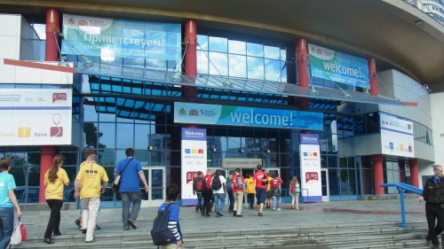
ロビーでは、観戦用の大きいスクリーンに、ICPCのルール説明の動画が繰り返し流されていた。この動画わかりやすくて良いと思う。
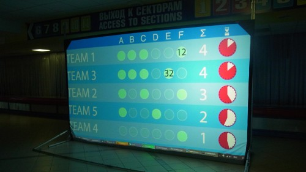
朝早く起きた割にやることがなくて暇していたら、Bill Poucherが登場する。コンテストエリアに入場するまでの待ち時間に、優勝カップを持って写真を撮ろう！というレクリエーションが始まる。
binding.pryと優勝カップ。ちなみにこのカップはWF参加者がこうやって触っていき、触った人の遺伝子を取り込んでいくので、The worlds smartest cupになるらしい。
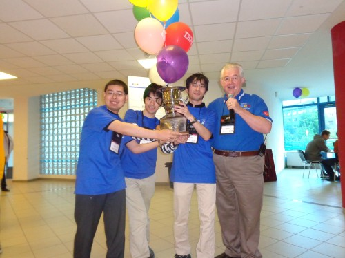
写真を撮ってもらって戻ろうとしたら、Bill Poucherに呼び止められた。荷物をコーチに預けていたので、服装がPerfect!ということでみんなに模範例として紹介したかったらしい。Perfect! Perfect! Nearly perfect!（自分だけバッジの位置が低かった）と言われる。テンション高い。
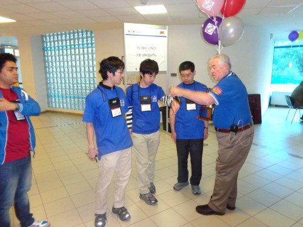
しばらくしてコンテストエリアへの入場ができるようになる。荷物を@ria_raiくんに預けて入場。
コンテストエリアは去年のWFとほぼ同じ感じだった。毎年フォーマットが決まっているのか、それともロシアはどこもこうなのか。
時間になったので練習セッション開始。とりあえずPCにログインして、Capsを潰し、vimrcを書き、あずにゃんをセットする。
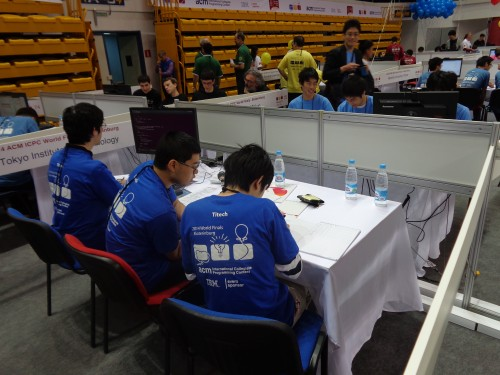
もうちょっとあずにゃんの映っている写真が欲しかったけど、練習セッションのコーディングで思いの外ハマってしまって、ria_raiくんに頼むのを忘れてしまった。
問題自体はWFの過去問っぽい。練習セッションだけど割と本気で解いていたら、バグらせてハマってしまった。とりあえず、提出方法の練習（submitコマンドで投げられる）とか、空白や大文字小文字の細かい差異は無視されるという仕様の検証とかして、練習セッション終了。
昼食を食べるため、徒歩でКосмосへ移動。会場に入ろうとしたところで、とこはるさんが道端に開いていた穴にはまる。すねを怪我したらしいので、救護室で手当してもらう。
食堂に行くと、出遅れたため人がいっぱいでダメかと思ったが、大ホールのほかにもう一つあるのを発見してそっちで食べた。
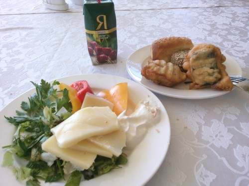
練習セッションで出た質問に対して答えるセッションがあるのだが、時間になってもmikecatさんが食べ終わっていないので、自分だけレセプションホールに行って話を聞いてくる。セッションが終わってから、後から来ていた他のチームメンバーと内容を共有して、Coach meetingがあるria_raiくんを残して外に出る。
建物の入口でQuestの景品を受け取り（参加者が少なかったらしく、1つでも写真を上げていると景品がもらえた）、外に出ると、何やら人が集まっている。どうやらRed-line tourという観光イベントをやるらしい。他にやることもないし参加してみる。道に描いてある赤い線が観光ツアーの経路になっているらしい（写真撮り忘れてたことに今気付いた）。
レーニン像。
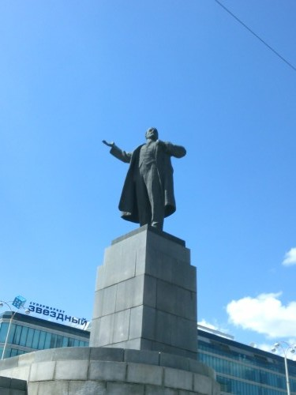
ダム広場。
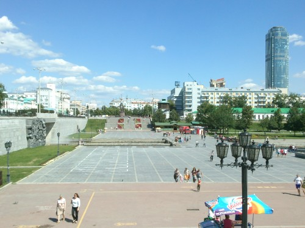 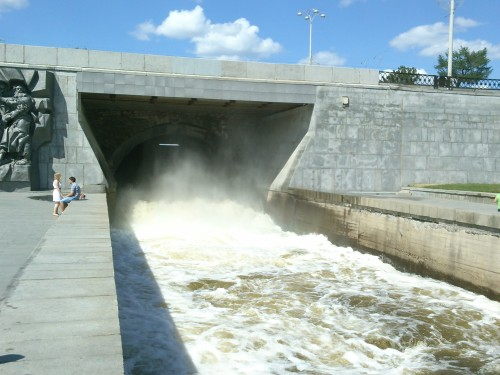
広場に謎のオブジェがあった。
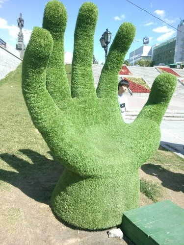
教会。ロシアの教会ってどこもこうなんですかね。
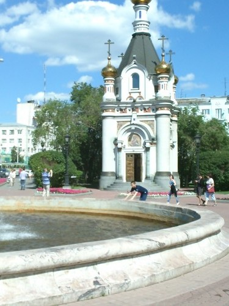
巨大キーボード。観光スポットとしてモニュメントを作ろうというプロジェクトで、たまたまキーボードの会社が出資したのでできたらしい。
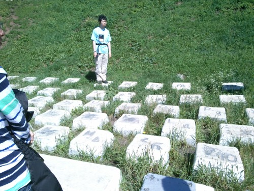
2時間くらい歩いて、Космосに戻ってria_raiくんと合流。来年以降のICPCでPythonを使えるようにするかもという話が出たらしい。面白いけど、問題を解く側としては使いどころが難しそう。
夕食を食べるため、昼に行ったホールへ。
担当の人が盛りつけてくれるシステムだったのだが（ビュッフェなのに）、結構容赦なく盛りつけてくるので想定より多くなってしまった。スパゲッティに入っている謎の草がめちゃくちゃ苦かった。ラザニアはうまい。
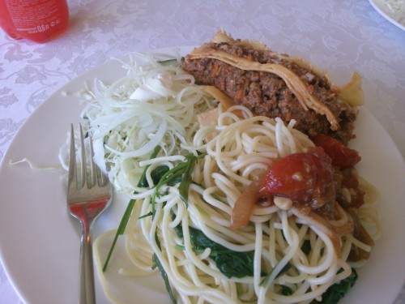
食事してからしばらくぶらぶらして、送迎バスに乗って帰ろうかと思ったら時間になっても来ない。どうも時刻表を覚え間違えていたらしく、30分ごとに来ると思っていたら、20:00になるまでは1時間に1本しかないらしい。
30分ほど外をほっつき歩いて時間を潰し、ホテルに戻る。とこはるさんとmikecatさんの部屋で問題をちょっと解いてから、自分の部屋に戻って就寝した。